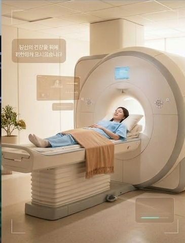
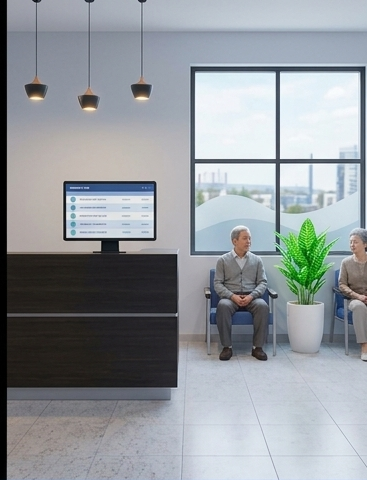
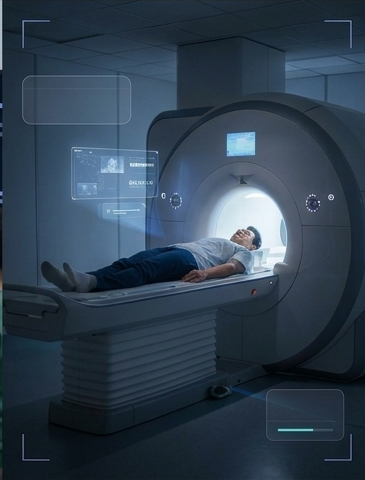

함께하는 의료 파트너
클리어스캔 회원 중 00%가 검진을 통해 암 의심 소견을 발견했습니다.
※ 자사 실제 통계로 교체 필요 (타사 수치 사용 불가)
※ 생존율 수치 출처: American Cancer Society. 국내 자료(국가암정보센터 등)로 교체를 권장합니다.
건강이 걱정될 때, 막연한 불안 대신 확실한 정보로 다음 단계를 결정하세요.

복잡한 절차 없이, 예약부터 결과 상담까지 온라인으로 진행됩니다.

원하는 검진 센터와 시간을 고르고, 간단한 건강 문진을 작성하세요. 5분이면 끝납니다.

편안한 가운으로 갈아입고 약 22분간 촬영합니다. 조영제나 방사선 없이 진행됩니다.
영상의학 전문의가 판독한 리포트를 앱으로 받고, 담당 의료진과 1:1로 결과를 상담하세요.
검진 비용을 매달 나눠서 낼 수 있습니다. 카드사 무이자 할부도 이용할 수 있습니다.
나에게 맞는 검진을 고르세요.
매년 한 번, 초기 암 징후를 포함해 수백 가지 질환을 폭넓게 살펴보는 기본 검진
연간 MRI의 모든 항목에 척추 정밀 평가를 더한 검진
척추 포함 MRI에 신경계와 근골격계 심층 분석까지 더한 가장 포괄적인 검진
※ 가격은 원화 환산 예시(VAT 포함)입니다. 검진 결과는 진단이 아니며, 이상 소견이 있으면 전문 진료가 필요할 수 있습니다.
※ 아래 후기는 예시 문구입니다. 실제 동의받은 후기로 교체하세요.
“건강검진에선 아무 말 없었는데, 작은 결절을 일찍 확인해서 바로 정밀 검사를 받을 수 있었어요.”
“예약부터 결과까지 앱으로 다 돼서 편했어요. 리포트가 그림으로 설명돼 있어 이해하기 쉬웠습니다.”
“아무 이상 없다는 결과를 받고 나니 마음이 정말 편해졌어요. 매년 받으려고요.”
“남편과 같이 받았는데 대기 시간도 짧고 직원분들이 친절했어요.”
“폐쇄공포증이 있어서 걱정했는데 촬영 중에도 계속 안내해 주셔서 무사히 마쳤습니다.”
MRI는 X선이 아닌 자기장과 고주파를 이용하므로 방사선 노출이 없습니다. 다만 심박조율기 등 체내 금속 장치가 있다면 사전 문진에서 꼭 알려주세요.
촬영 4시간 전부터 금식을 권장합니다. 금속 액세서리는 착용하지 않고 방문해 주세요.
촬영 후 영업일 기준 7일 이내에 앱과 이메일로 리포트를 보내드리며, 이후 의료진과의 상담 일정을 잡을 수 있습니다.
증상 없는 예방 목적의 검진은 일반적으로 건강보험 적용 대상이 아닙니다. 실손보험 적용 여부는 가입하신 보험사에 확인해 주세요.
검진 2일 전까지는 앱에서 무료로 변경·취소할 수 있습니다.